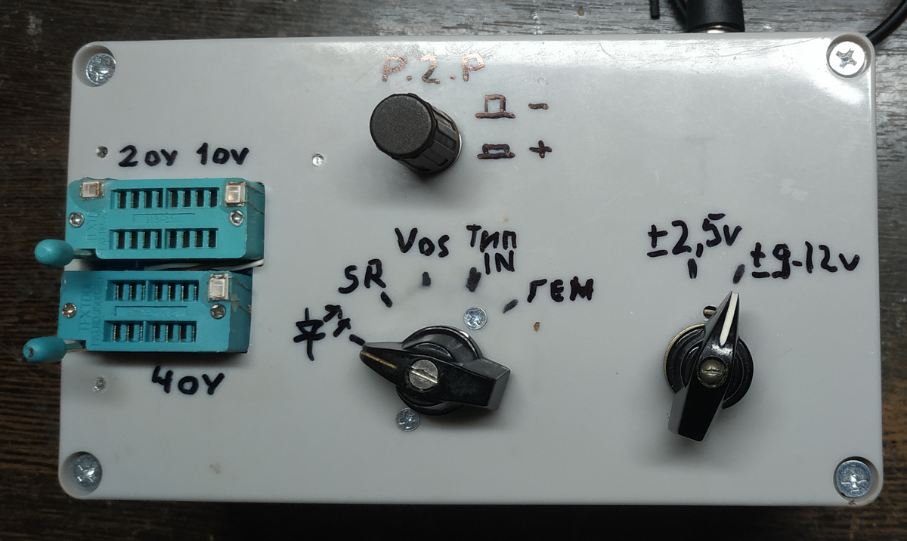
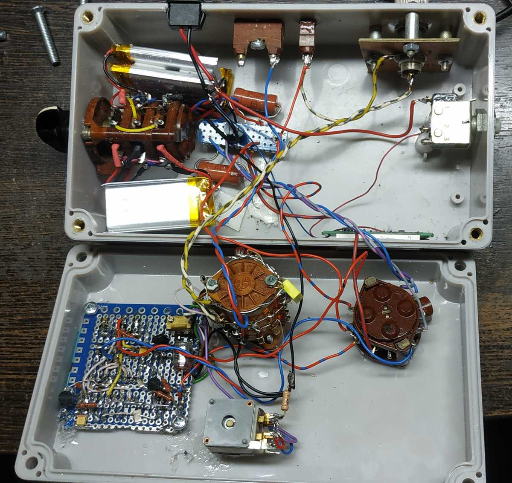

Собирал естественно навесным монтажем. Нарисовал печатку под панельки, но лень делать, и сделал на монтажке. Картинку платы оставлю, может кому пргодится.
Файл не выкладываю, печатка не сложная. Очень советую под ОУ в DIP14 поставить пнельку на 16 ног или иметь адапрер Адаптер DIP14-SOIC14. Я поставил на 14, а когда пришлось TL074 в smd исполнении проверить - засада. Адаптер DIP16-SOIC16 150mil не влазит. А Адаптера DIP14-SOIC14 нет.
Сейчас я бы переделал схему. Включал не последовательно повторители, а подавал меандр на каждый ОУ. Это информативнее. Хотя, если один в корпусе дохлый, я бы его выбросил.

Потроха. Руки конечно кривоваты (кривые), но с отрочества усвоил, если из кожи вон вылезу, но сделаю более-менее красиво, работать не будет, или криво. Шутка, но в доле шутки ... Так что - как есть. Но работает!!!
Справа кнопка проверки зарядки аккумуляторов на китайском модуле-табло. Разистор с переключателем. Пустой вход, это для генератора, не распаял.